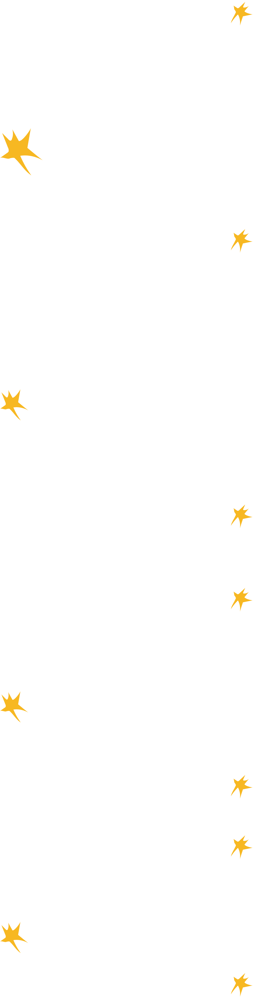
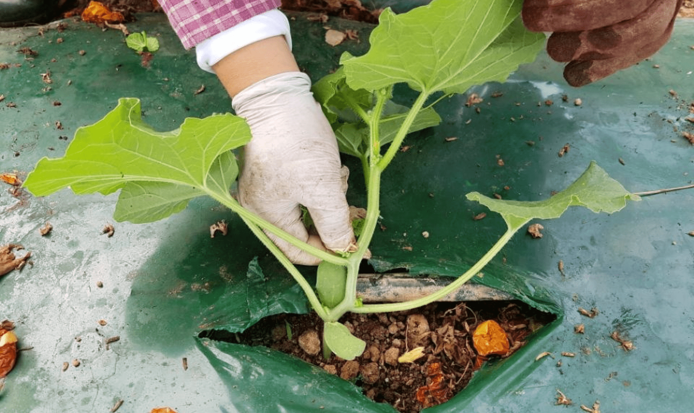
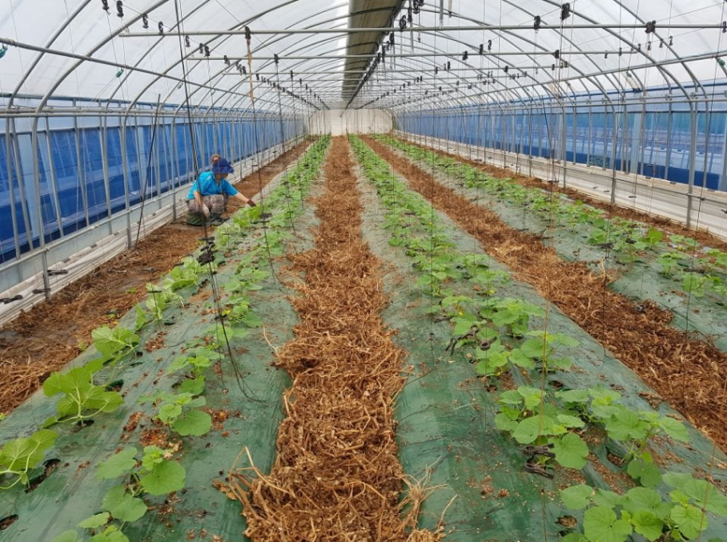

친환경 농사
내: 친환경 농사는 어떻게 하게 되셨나요?
이: 아시는 분이 저한테 건의를 했어요. 친환경에 대해서 같이 공부하면서 자연스럽게 친환경 농사에 비전을 가지고 시작을 했는데, 사실 제가 생각한 그 비전은 친환경 농산물을 지으면 상당히 비싸게 팔 수 있을 거라는 기대였어요. 그런데 그렇지는 않더라고요. 지금은 친환경을 하겠다고 찾아오는 사람이 있으면 진지하게 얘기해요. 기본적으로 지켜야 하는 것들을 지킬 자신이 확고하다면 알려주겠다고. 그런데 이게 결코 녹록지는 않아요.
내: 친환경 농사를 하시니까 더 어려운 점이 있을것 같아요.
이: 사실 친환경 농사가 많이 힘들어요. 일반 농약을 절대 사용하면 안 돼요. 그리고 지금은 320가지의 안전성 검사를 수시로 하는데, 한 번이라도 약을 치면 다 검출이 돼요. 농약을 사용하지 못하니까 병해충으로부터 농산물을 지켜내는 것도 힘들고요. 그런데 또 친환경 가격이 비싼 건 아니에요. 그런데 일반 관행 농사로 다시 못 가는 이유가 뭐냐면, 학교 급식에 대한 책임감도 있지만 일단 몸부터 달라졌어요. 예전에 농약 줄 때하고 다르게 지금은 두통이라든가 몸 아픈 게 없어요. 친환경 농사 지은 지 15년이 넘다 보니까 그런 것이 없어진 거야, 내 몸 자체가. 농약에서 자유로워지고, 농사짓는 농민으로서도 자유로와진 거지. 그리고 이제 일하다가 잘 따서 먼지만 닦고 그 자리에서 먹을 수 있어요. 우리 아이한테도 그렇게 먹으라고 하기도 하고. 농산물이 가장 안전하게 생산되는 거에 대한 자부심. 이런 것들도 있고.
내: 요즘은 어떤 작물들을 기르고 계세요?
차: 메론, 대추방울토마토, 완숙토마토, 샤인머스캣 등등 되게 많아요.
내: 농사 계획은 어떻게 세우시나요?
이: 짧게는 1년, 길게는 2년까지 예상을 하고서 계획을 잡아요. 예를 들어 딸기를 심으면 9월 초에 심어서 11월부터 5월까지 딸기를 수확하고 관리를 해야돼요. 5월에 딸기 수확이 끝나면 메론을 심고, 그 후에는 쪽파를 심어요. 파는 빠르면 11월, 12월까지 수확하기도 해요. 이번 해 봄까지 수확하기도 하고요. 뭘 심을지 사이클을 항상 준비해야 돼요. 변동이 있기는 하지만 거의 이렇게 1년 계획을 맞춰놓고 있어요.
내: 지금은 어떤 걸 하고 계세요?
이: 건고추 수확하고 있고요. 지금 건고추, 청양고추, 방울도마도가 다시 수확이 시작됐어요. 수확이 끝나면 그 자리에 다른 걸 심어서 키우고 또 수확하는 걸 반복해요. 그렇게 해야만 소득이 매달 나오니까요. 최대한 빨리 사이클이 돌아가야만, 쉬지 않고 돌아가야만 소득이 유지가 되죠. 그래서 쉬는 날이 없어요.

코로나를 비롯해서 요새 힘든 점들
내: 최근 몇년 동안에는 코로나로 인해서 공급이 불안정해졌을 것 같아요.
이: 많이 그렇죠. 작년 같은 경우는 농가들이 굉장히 타격을 입었어요. 기본적으로 매출이 절반, 혹은 절반 이하로 떨어졌어요. 그리고 품목에 따라서 거의 납품을 못하는 경우도 있었어요. 농가들이 포기하겠다고 했어요, 너무 힘드니까. 생산을 했는데 판로가 없으니까. 그래도 같이 하자, 다독이면서(하고 있죠).
내: 매출이 절반이나 떨어지셨다니… 이걸 어떻게 해결하셨어요?
이: 해결은 안 돼요(웃음). 해결은 안 되고. 그런 부분은 감수하고 가는 거죠. 어쩔 수 없이. 정부가 다 커버해주는 것도 아니고, 지자체도 마찬가지고 그런 것들을 이제 농민들이 끌어안고 가는 거예요. 학교 급식이 아니더라도 다른 농업 분야도 마찬가지일 거예요. 그런 부분들은 당사자들이 끌어안고 갈 수밖에 없어요.
내: 얘기해주신 것 말고도 농사 지을 때 고충이 있다면 무엇인가요?
이: 자연재해를 입었을 때, 특히 태풍이라든가 집중 호우가 왔는데 농산물을 수확해야 되는 때가 됐어요. 예를 들어 메론을 심었는데 농사가 잘 됐거든. 그런데 재해 피해를 입으면 하나도 못 건지고 수확을 포기해야 해요. 그때가 가장 힘들긴 해요. 몇 달 동안 노력했는데 그 결과를 수확을 못하고 포기해야 하는 상황이 되면…. 물론 수익이 안 나니까 금전적으로 힘든 것도 있지만 금전적인 것은 두 번째고, 정신적인 스트레스가 상당히 커요.
내: 최근 기후변화로 자연재해가 늘었다는데, 이것과도 연결이 된 문제일 수 있겠네요(이: 그쵸, 그쵸.). 농사 하시면서 기후변화를 많이 체감하시나요?
이: 많이 느끼죠. 올해 장마가 짧은 기간에 지나갔어요. 장마가 짧게 지나간 건 농민들한테 유리한 조건인데, 올해가 또 굉장히 더웠잖아요. 폭염 속에서 토마토를 수확하기 시작했는데 수확량이 고온이다 보니까 열매가 제대로 수정이 안 되고, (열매가)달리지도 않고. 한편 봄에도 비가 많이 왔고, 가을장마가 온 것도 확실히 어려움이 되었었죠. 기후라는 것이 좀 바뀌면 작물들은 민감하게 반응하거든요. 겉에서 보면 같게 보이지만은 속을 보면 열매가 훌륭하지 않은 경우가 있어요, 그러니까 A급이 안 나오고 B급이 나오는 경우가 있어요. 농산물 가격이 A급인지 아닌지에 따라 차이가 많이 나거든요. 요즘 겨울철은 또 온난화된 느낌이 있다가도, 갑자기 혹한기가 오기도 해요. 작년 같은 경우도 마이너스 18도 이상 뚝 떨어지고. 여름에는 기온이 너무 고온으로 올라가고요. 그리고 이런 것들이 심해지면 농민들은 또 힘이 들죠. 재해보험이 다 해결해 주는 건 아니니까, 피해를 최소화하려고 노력을 하죠. 농업도 계속 지속적인 그런 투자가 필요하더라고요. 과거에는 인력으로 많은 걸 채웠는데 지금은 인력이 부족한 상태여서 인력이 최소로 투입할 수 있게 시스템을 만들어야 하거든요. 돈이 많이 들어가서 금전적으로 부담이긴 한데, 그래도 시스템을 바꿔야만 농업을 영위할 수 있기 때문에 그렇게 시스템을 바꿔보려고 해요. 2022년까지 시스템을 바꾸면 많이 수월해지고 몇 년 정도 지나면 좀 여유가 생기지 않을까 기대하고 있습니다.

농사를 시작하게 된 계기
내: 그럼 이제 아예 과거로 가서, 두 분은 어떻게 농사를 시작하게 되셨나요? 농사 짓기 전에 하던 일이 있으신가요?
이: 원래 아버님 때부터 농사를 지었어요 제가 초등학교 다닐 때부터. 저는 농사를 안 지으려고 했죠. 어렸을 때는 친구들하고 놀고 싶은데 집에서 일을 도와야 하는 게 싫었어요. 이게 속에서 쌓였던 것 같아. 그런데 성인이 된 후에 아버님이 많이 아프셨어요. 누군가가 아버님을 모시고 케어를 해야 되는 상황이 돼서 제가 (익산으로) 내려오게 됐고, 소득을 낼 만한 뭔가를 만들어야 하는 과정이 생기다 보니까 선택의 여지가 없었어요 저한테는. 그렇게 농업을 하게 된 거죠
차: 저 같은 경우에는 결혼을 한 이후에 시골에 들어와서 농사를 시작했어요. 정말 뭐라 그러지, 콩깍지가 씌었었어요. 그때는 그냥 짠했어요. 그 등을 바라보는데 저 사람이 어떤 마음으로 지금까지 농사를 짓고 살았는지, 그게 짠했어. ‘내가 못해도 이 사람이 열 개를 할 때 한 개라도 해주면 빨리 끝내고 빨리 집에 갈 수 있겠다’라는 생각으로 시작하게 됐어요. (내: 힘들지는 않으셨어요?) 처음 겪는 거다 보니까 몸이 힘든 것보다는 모른다는 게 더 힘들었어요. 반복적으로 그걸(농사를) 계속 꾸준히 했던 사람들은 말하지 않아도 보면 아는데, 저처럼 도시 생활을 했던 사람들은 몸에 습관적으로 되어야만 그게 되니까요. 한 5년 차 되니까 이제 조금씩 조금씩(되더라고요). 심는 시기는 아직도 잘 계산이 안 되지만 언제 어떻게 했을 때 이게 그 다음에는 뭘 해야 되고, 번식이 되면 어떻게 해야 되고 이것만 조금 감이 와요. 지금은 생각보다 일머리라고 하나, 그런 게 좀 생긴 것 같아요. 나름 저는 잘한다고 자부심을 갖고 있는데. 사람이고 여자이기 때문에, 또 며느리이고 엄마이자 아내 역할, 그 역할을 다 하면서 하려니까 아무래도 힘든 부분이 많이 있죠. 체력적인 부분에서. 다 100% 다 완벽하게 하는 슈퍼우먼이 될 수가 없어요. 한 30%씩. 30%씩밖에 못 하고 있는 것 같아요.
내: 이모는 농사 짓기 전에는 어떤 일 하셨어요?
차: 도시에 살 때는 메이크업 일을 했어요. 신랑 신부 메이크업 해주는 곳의 실장으로 오래 있었어요. 모든 사람들이 저한테 천직이라고 할 정도로 그 생활이 너무 즐거웠어요. 왜냐면 선남선녀가 평생 다른 일을 하고 다른 삶을 살아가다가 둘이 하나가 되는 날, 그 날을 정말 예쁘고 멋지게 꾸며줄 수 있다는 게 나한테는 돈으로 환산할 수 없는 기쁨이었어요.
내: 완전 다른 일을 하셨었네요. 직업도 그렇고 서로 다른 삶을 살아오셨는데 두 분은 어떻게 만나게 되셨어요?
이: 가까운 지인이 소개를 해줬어요.
차: 목살집 같이 생긴(?) 레스토랑에서 만났는데
이: 거기서 만났는데 첫 느낌이 딱 오고 그렇지는 않았어요.
이: 근데 이제 한 번 만나고 두 번 만나다 보니까 좀 괜찮다, 이런 것들이 쌓이고 쌓이면서(차: 잘 얘기해요^^ 이거 오래오래 남을 거니까) 같이 할 수 있겠다, 이런 판단이 섰죠.
재희 이모 이야기
차: 저는 좀 센 스타일이었어요. 그땐 같이 근무하던 사무실 직원이 차도녀라고 말할 만큼. 그때는 머리도 꼬고 속눈썹도 막 길게 달고 네일아트도 하고 옷은 올블랙. 킬힐 아니면 신지도 않았고요. 지금은 신발장에서 썩고 있어요.(웃음) 그렇게 하고 약속 장소 1층에서 2층 딱 올라가는데 이 분이 눈에서 레이저를 막 뿜고 있는 거예요. 맘에 안 들어하는 게 느껴질 정도야. 나도 그닥 편치가 않은 자리여서 ‘아이고, 빨리 나가야지’ 했는데 주문했던 목살 스테이크가 나왔어. 일단 먹고 옆에 있던 카페에 가서 얘기하다 보니까 닮은 구석이 조금씩 보여. 내 말을 귀 기울여 들어주는 거에 ‘어, 이런 면도 있네. 근데 호감은 있지 않구나.’ 느낄 정도였어요. (당황하는 사무국장님) 여자가 느낄 정도면 어떤 건지 알죠? 좀 기분이 나빴어. 애프터까지는 아니어도 그렇게 표시를 안 해줄 수도 있는 건데. 그런데 거의 얘기가 끝나고 집에 갈 때쯤 되니까 눈빛이 조금 변했어. 근데 애프터 신청을 안 해. ‘오늘이 끝이고 예의 상 하는 거구나’ 하고 마음을 싹 비웠지. 그러고 나서 한 일주일 연락이 없었어요. 근데 그 다음에 연락이 되고 자연스럽게 얘기를 하다 보니까 마음이 가게 됐어요. 저는 집에서 큰 딸이에요. 여기는 남자로서는 둘째 아들, 자녀 중에서 셋째고. 근데 셋째가 맏이 역할을 하고 있는 상황인 거예요. 내가 맏이이기 때문에 그 역할이 엄청 힘들다는 걸 알거든요. 그래서 그냥 마음이 좀 갔어요. 마음이 조금 가고 있는 상황에서 자연스럽게 이렇게 말하더라고요. ‘우리 한번 만나봅시다.’ 이게 프로포즈예요. 되게 박력 있고 막 눈에서 레이저 뿜뿜 하고 그러니까 프로포즈 같은 걸 할 때도 적극적으로 해줄 줄 알았는데 그건 아니더라고요(웃음). 보기보다 꽃을 너무 좋아하고 예쁜 거 보면 지나가다가 서고, 꽃 한 송이를 봐도 독특하고 예쁘다 하면 사진 찍어서 보내주고. 그런 것들이 저하고 많이 닮았어요. 그래서 더 힘들어.
내: 도시와 농촌에서 사는 삶이 많이 다를 것 같은데, 어떠세요?
차: 도시에서 살 때와 지금이 다른 점은, 도시에서는 친구들 만나서 차 다 마시고 수다떨고 이게 굉장히 크잖아요. 차지하는 게 많잖아요. 전화 통화 2시간하고 ‘야 우리 중요한 건 나중에 만나서 얘기하자’ 그런 게 생활화가 되어있었고, 전화 한 통만 걸어도 야식을 언제든지 먹을 수 있었다는 거? 이제 그런 게 아예(없죠). 근데 이런 게 없다고 해서 슬프지는 않아요. 불편하긴 하지만요. 예전에는 야식을 많이 먹었다면 지금은 야식이 없어요. 그러다 보니까 건강해지는 느낌은 있어요. 족발, 닭발 뭐든 시켜먹다 아침에 퉁퉁 부어있고 그랬는데 결혼하고 나서는 건강이 진짜 많이 좋아졌어요. 규칙적으로 먹고 자고 하다 보니까 많이 좋아졌죠. 그런데 아이 키우면서 불편한 점이 하나씩 생기더라고요. 성장하는 거에 따라서 거기에 맞춰줄 수 있는 게 필요하거든요. 아이들이 금방금방 크잖아요. 어릴 때는 친언니나 사촌언니 옷 물려받고 장난감이나 책도 받고 그렇잖아요. 시골은 그럴 여건이 안 돼요. 아이들이 많이 없거든요. 주위에서 얻어서 입히고 싶어도 그럴 수가 없어요. 필요한 걸 상황에 맞춰서 해주고 싶은데, 내가 눈으로 직접 보고 고르고 싶어도 그럴 수 있는 상황이 안 된다는 게 좀 힘들죠. 수급이 빨리빨리 되지 않으니까요. 그리고 또래가 많이 없으니까, 사회성은 무조건 어린이집 같은 곳에서 키워야 되는 상황인 거죠. 좋은 점은 아이가 마음껏 뛰어도 밑에 층에서 쫓아올 사람이 없어요. 우리 애기가 네 살인데, 에너지가 너무 많아. 3단 뛰기를 해요. 엄청 뛰어요. 그래서 둘이서 이구동성으로 ‘우리 아파트 살았으면 맨날 싸웠을 거야’하고 말해요. 아이한테 ‘뛰지마’, ‘안돼’라는 부정적인 말을 안 하니까 애기가 되게 밝아요. 강압적인 제재 없이 커서 자유로운 것 같아요.
내: 이모가 농사 시작하시면서 많은 걸 배우고 계시다고 들었어요.
차: 이것저것 공부하고 있는데, 만학도가 된 기분이에요. 사람들한테 필요한 게 무엇이고 어떻게 농업에 접목을 시킬지를 공부하다보니, 농업도 발전이 필요하더라고요. 농사를 지으면서 교육도 받고, 또 자격증이 필요하면 자격증도 취득을 해야 해요. 빠르게 바뀌는 세상에서 내가 준비하지 않으면 안 돼요.
내: 그동안 배운 것들에 대해 말씀해주세요!
차: 복지원 일을 봄에부터 시작을 했어요. 치유라는 단어 그게 굉장히 잘 마음이 와닿았어요. 이제 꼬맹이 이제 4살이잖아요. 40대 중반이 넘었는데 언제까지 농사를 지을지. 솔직히 (농촌에서 노인은) 60부터고 40대는 또 젊은 청년이라고 하지만, 내가 몸으로 느꼈을 때는 길어야 한 10년이지 않을까. 지인 농업사라는 자격증이 11월 달에 있는데, 2021년 첫 시행이 되고 있고 정부에서도 밀고 있고. 우리 이때 세대들한테는 치유 농업이라는 게 정말 필요하겠더라고요. 그런데 여기 우리 아까도 얘기했다시피, 우리나라는 수익이 나지 않으면 못 하는 구조잖아요. 그런 것들이 조금 많이 아쉬워요. 마음은 열정적으로 뭔가를 하고 싶은데, 도전하고 싶고 더 도전하려고 도전하려고 하면 여건이 안 맞는 거예요 그래서 일단은, 내가 배울 수 있고 할 수 있다면 많이 해 놓고, 나중에 누군가 나한테 기회를 줬을 때 그걸 내가 잡을 수 있는 위치를 만들어놔겠다는 생각이 들어서 지금 공부하고 있어요. 이제 처음에는 강의를 듣다가 이제 꼬리에 꼬리를 자꾸 물어가지고 교육을 받게 되는데, 지금은 이제 복지원에서 이제 필기 시험 합격을 하고 지금은 실습 기간을 가지고 있어요. 장애인 센터에 가서 실습을 하고 있는데, 이제 코로나가 있으니까 이게 녹록지는 않아요. 그래도 제가 이 자격증을 통해 도움이 필요한 사람들이 왔을 때 내가 제공해줄 수 있는 것을 줄 수 있잖아요. 자원봉사까지는 아니지만, 내 아이의 친구가 왔을 때도 무언갈 해주고 싶고. 단순 작업이 힘들지는 않지만 몸으로 할 수 있는 게. 그만큼 더 점점점 줄고 또 아까 얘기했다시피 인력이라는 제한이 생긴 상황에, 코로나가 생겨서. 백신이 나왔지만 또 다른 바이러스가 생길 수도 있고. 하나가 없어지면 또 다른 새로운 것이 생기면서 거기에 맞춰서 사람이 따라갈 수밖에 없는 게 지금 우리 삶이잖아요. 그렇기 때문에 우리 농부들도 마찬가지예요 제일 중요한 건 친환경 농산물이 우리 몸에 좋아서 얼마만큼 이익을 주고 얼마만큼 우리 몸에 필요한지. 그런 것들을 좀 알리고 싶어요. 또 마트 가서 (농산물을)사 먹을 때는 그 금액만 생각을 하지 얘가 어떻게 커 왔는지 전혀 관심 없어요. 농사를 짓는 사람 입장으로서는 ‘얘가 이렇게 커가고 있습니다’라는 걸 보여주고 싶어요. 전에는 아기 낳고 5개월째에 블로그를 시작했었어요. 농사만 잘 지으면 되는 게 아니더라고요. 잘 지은 걸 잘 파는 게 시골에서 살아갈 수 있는 방법인 것 같아요. 한 1년을 하루도, 이제 하루도 안 빼고 블로그를 썼어요. 그러고 나서 이제 얘가 한 이제 1년 정도 되니까, 아기가 아프기 시작하는 거야. 이제 아기들이 아픈 시기가 있더라고요. 그러다 보니까 블로그를 자연스럽게 못 하게 됐어요. 왜냐면 병원에 일주일씩 입원해야 되는 상황이 되고, 그게 아니면 농장에서 일을 해야 되는 시기가 되고 이러다 보니까 블로그를 계속 하는 게 너무 힘들더라고요. 그 다음부터는 조금씩 이제 기회가 되면 조금씩 해놓았었데, 그것들이 3년, 4년 째 되니까 그걸 보고 연락을 하시는 분들이 생겼어요. 저희 같은 경우는 이제 친환경 농사와 어떤 작물이 건강에 어떤 도움이 되는지, 씨앗부터 어떻게 관리를 해서 어떻게 심는다든지 이런 정보들을 올렸어요. 요즘에는 사람들이 건강을 많이 생각하잖아요 코로나로 인해서 조금 더 친환경에 대해서 조금 사람들이 조금 더 알아주는 게 생겼더라고요.
원동력 및 뿌듯했던 경험
내: 진짜 하고 계신 게 많으시네요. 그렇게 많은 것들을 배우게 만드는 원동력이 있을까요?
차: 낮에는 농사 일을 하고. 밤에는 어딘가를 가서 교육을 받고 자격증 취득을 하고 그게 처음에는 필요하니까, 정말 절실하게 들어야 하기 때문에 하는 거예요. 내가 준비되지 않으면 기회가 왔을 때 잡을 수 있는 게 없더라고요. 만약에 준비하지 않았는데 뭔가 기회가 오면 거기에 자격 요건이 안 돼버리는 경우가 있을 수 있잖아요. 그러다 보면 그만큼 다른 사람한테 뒤쳐지고. 그러다 보니까 농사할 때도 여러 가지를 배워야 돼요. 그리고 내가 소신이 있어야 되더라고요. 친환경을 하는 데 소신이 있듯이. 그리고 마인드 자체가 친환경 농사를 짓는다든지. 농부가 되고 싶은 사람도 내가 왜 농사를 짓고 내 이 농산물을 가지고 일반인들한테 내가 어떤 영향을 줄지도 생각을 해야 된다라는 거를 농사를 지으면서 내가 시골에서 살면서 느꼈어요. ‘나 도저히 못 하겠어’라고 생각할 정도가 아니면 정말 모든 도전을 해서 열정적으로 살았으면 좋겠어요. 나이가 어느 정도 들고나서는 사실상 체력적으로 더 못하게 되어요. 우리 친구들이 지금 내 젊음을 좀 열정적으로 팔았으면 좋겠어요. 그러다보면 정말 내가 좋아하는 천직이 옆에 와 있을 수도 있고요. 내가 정말 즐거워하는 일이어야 지속적으로 할 수 있는 거거든요. 혹 내가 결혼을 하고 싶더라도, 내가 잠깐 1년 정도밖에 하지 못한다고 하더라도, 열정적으로 할 수 있는 천직을 찾았으면 좋겠고. 1년이라도 그 뿌듯한 자신감을 느껴본 사람만이 내 아이에게 ‘열정적으로 살라’는 말을 할 수 있겠더라고요. 내가 지금 우리 애기한 테 원하는 것도 그거에요. 뭐든지 두려워하지 말고 도전하라고. 열정적으로 살라고. 열정적으로 살다 보면 내가 좋아하는 게 있다보면 거기에 대해서 더 특출나게 더 열심히 하려는 게 생기잖아요. 내가 좋아하다보면 더 잘하게 되고, 그러다 보면 결과물이 뭐든 나오게 되어요. 노는 것도 열정적으로, 쉬는 것도 열정적으로요. 열정적으로 살다 보면 나한테 뭔가 기회가 생기고. 도전해보고 안 되면 어쩔 수 없지만, 도전하지 못하면 그것도 시간을 그냥 버리는 일밖에 안 됐어요. 열정적으로 살라는 거죠. 오케이?
내: 진짜 제가 본받아야 할 것 같아요(웃음). 다른 얘기로 넘어가서, 혹시 농사 지으면서 뿌듯했던 경험이 있나요?
이: 학교급식 영양사 선생님이 저한테 전화하러 와서 진짜 맛있는 토마토를 공급해 줘서 고맙습니다. 이렇게 전화를 받은 적이 있어요. 제가 그럴 때는 돈이 문제는 아니에요. 기분이 참 좋고 이것을 내가 진짜 잘했다 하는 느낌이 올 때가 있어. 그리고 이제 아까 이제 와이프가 이제 sns 통해서 좀 물건을 팔긴 하는데. 전화가 오기도 하고 후기를 쓰기도 할 때, 참 좋은 걸 줘서 참 맛있게 이렇게 안전하게 생산된 것을 구하게 돼서 고맙다 이렇게 올 때가 있어요. 이런 말을 들을 때 '잘하고 있다' 이런 느낌이 있죠.
내: 마지막으로 하고 싶은 말이 있다면?
이: 우리 농산물이 소중함을 항상 알고 부모님이라든가 가까운 지인들애게 우리 농산물을 우선적으로 사용하자 이렇게 우리 농산물 홍보 대사를 해줬으면 하는 바람이 있어요. 부탁드립니다!(웃음)
차: 아까 얘기했다시피 정보라기보다는 열정적으로 살았으면 좋겠다는 말을 하고 싶어요. 그리고 제가 아까 말한 것처럼 저도 정말 다 100퍼센트만큼 했으면 좋겠는데, 혹여라도 그렇게 못한다 하더라도 ‘아이 저 이모 말도 안 지키고 안 되겠네’ 그렇게 생각 안 했으면 좋겠어요(웃음). 혹시라도 사람 일이라는 건 모르잖아요. 잘하고 있는지. 가끔 한번쯤은 감시자가 돼서 ‘이모, 그 때 했던 말 잘 지켜가고 있나요?’ 이런 문자 한 번씩 보내주고. 그런 것들? 제일 중요한 거는 열정적으로 살자는 거예요. 열심히!